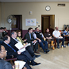

Website Overview
Over a decade of momentum and investment in Downtown Lynn, Massachusetts has guided it toward a more thriving, vibrant, and economically competitive future. This project, conducted by the Metropolitan Area Planning Council and funded by the Metro Boston Sustainable Communities Regional Planning Grant, features ideas and recommendations that build on the vision of a prosperous and inviting Downtown Lynn. We offer these ideas and recommendations as an opportunity to refuel and tune up a forward-moving vehicle; a short pit stop along the way to help Lynners achieve the vision for its dynamic and diverse center. Sections of this website illustrate and explain this vision, along with strategies for making Downtown Lynn a more engaged, better connected, well-coordinated, and beautifully maintained community that is competitive as a regional destination. About this Project: This section provides details on the project's mission, partners, scope of work, and funding, as well as acknowledgments listing the numerous individuals and organizations that have contributed knowledge, research, and resources for this project. Pages in this section include: Who We Met: This project included extensive community engagement. The MAPC project team met with a Team of Advisors as well as dozens of community members to learn more about what the community wants for its future and what has happened in its past. Pages in this section include:
IV. What We Learned: What is the vision for Downtown Lynn? This section provides anyone interested in the future of Downtown Lynn with background information and the context for the perspectives and conclusions of MAPC. We share our analysis of what we learned during our community engagement efforts, along information about the project location and its context within the region, demographic analysis that illustrates Lynn's incredible diversity, analysis of the city's zoning regulations, a review of recent infrastructure and real estate investments, and a timeline of the previous community organizing, land use planning, and economic development efforts over the past decade that help to articulate the vision for Downtown Lynn. Pages in this section include:
V. Our Recommendations: As stated above, this project is only a pit stop. Our hope is that the information, ideas, and recommendations shared on this website will serve to inspire community members to come together and build on the vision! This section includes our recommendations and suggests resources for achieving them. Pages in this section include: |
||